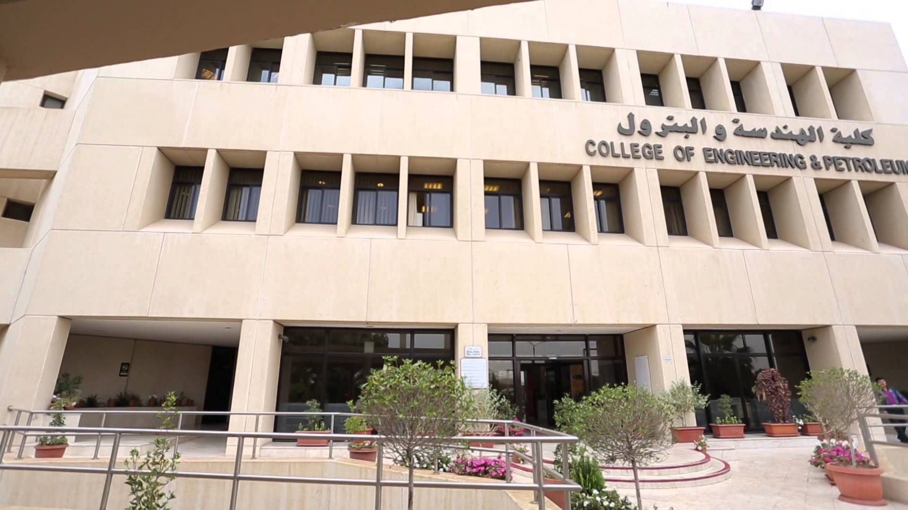
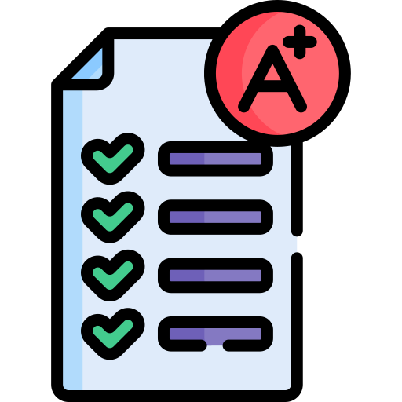

كلية الهندسة و البترول - جامعة الكويت

معلومات عامة
تم إنشاء كلية الهندسة و البترول في سبتمبر عام 1975، و تعتمد الدراسة في الكلية على نظام المقررات، و على الطالب أن يجتاز (144) وحدة دراسية بنجاح للحصول على شهادة الإجازة الجامعية (بكالوريوس العلوم) في تخصصات الكلية المختلفة

موقع الكلية على خرائط قوقل

التخصصات المتوفرة في الكلية
هندسة كهربائية - هندسة مدنية - هندسة ميكانيكية - هندسة كيميائية - هندسة البرتول - هندسة صناعية والنظم الإدارية - هندسة الكمبيوتر

مجالات عمل الخرّيج
مهندس موقع - تنفيذي (شركات - قطاعات خاصة - مقاولات) - إستشاري - وزارة الدفاع، النفط، الكهرباء والماء، المواصلات والأشغال العامة - محطات تكرير النفط في شركات البترول - معهد الكويت للأبحاث العلمية - جامعة الكويت - مصافي النفط - وحدات تحلية المياه ومركز تنمية مصادر المياه في وزارة الطاقة - مجلس حماية البيئة
النسب و شروط القبول
% ألا يقل المعدل المكافئ للطالب المتقدم خريج القسم العلمي عن 78
تكون الأولوية في القبـول للطلبة الحاصلين على أعلى معدل مكافئ محسوباً بناءً على نسبة الثانوية ونتائج
امتحانات القدرات للطالب وفقا للأوزان التالية
65 % من نسبة الشهادة الثانوية-
15 % من نتيجة امتحان القدرات اللغة الإنجليزية-
20 % من نتيجة امتحان القدرات الرياضيات -
ألا تقل درجة اختبار القدرات عن 50% في كل من امتحان اللغة الإنجليزية و الرياضيات

فيديو من الكلية